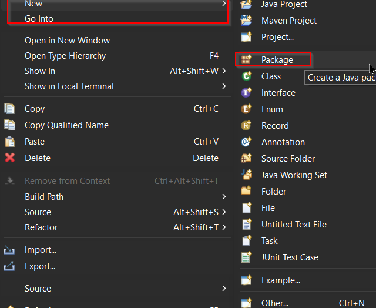
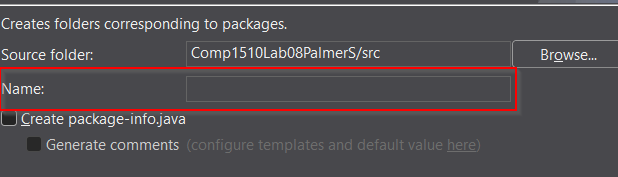

Step 1: Open Eclipse IDE
Launch your Eclipse IDE to get started.

Step 2: Create a New Project
Right-click in the Package Explorer and select New > Package to create a new

Step 3: Configure Your Project
Follow the prompts to configure your project settings, such as project name, location, and build settings.
